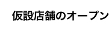
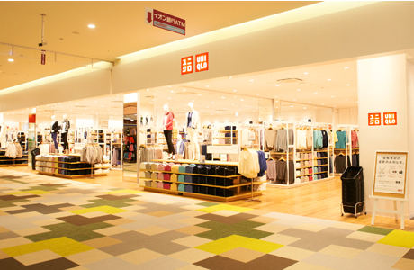
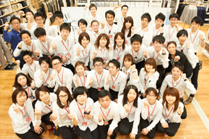
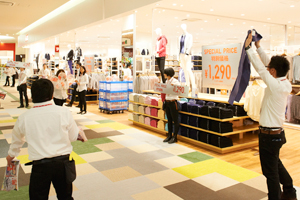
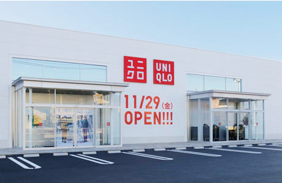
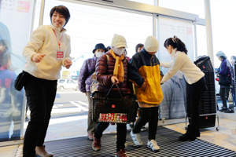
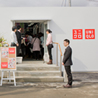
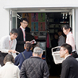
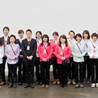
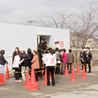

復興支援を目的に仮設店舗でオープンした宮城県の気仙沼店と岩手県のシープラザ釜石店は、地域のご支持を得て、通常店舗として現在営業しております。
リニューアルオープンから1年後には、両店舗で1周年イベントを行いました。
ユニクロイオンタウン釜石店 仮設店舗から通常店舗として新しくオープン
ユニクロ 復興応援プロジェクトの一環で、東北大震災から1年経った2012年3月9日に、仮設店舗としてオープンしたユニクロ釜石シープラザ店。
幅広い商品を、より広いスペースで販売してほしい―現地のお客様から頂いた声に応えて、2014年3月14日、ユニクロイオンタウン釜石店として新たなオープンを迎えました。

- 
- 
ユニクロシープラザ釜石店 仮設店舗の頃の様子
ユニクロ気仙沼店 仮設店舗から通常店舗として新しくオープン
ユニクロ 復興応援プロジェクトの一環で、東北大震災から1年経った2012年3月9日に、プレハブ建設の仮設店舗としてオープンしたユニクロ気仙沼店。幅広い商品を、より広いスペースで販売してほしい―現地のお客様から頂いた声に応えて、2013年11月29日、気仙沼店は通常店舗として新たなオープンを迎えました。



- 
ユニクロ気仙沼店 仮設店舗の頃の様子
- 
- 
- 
- 